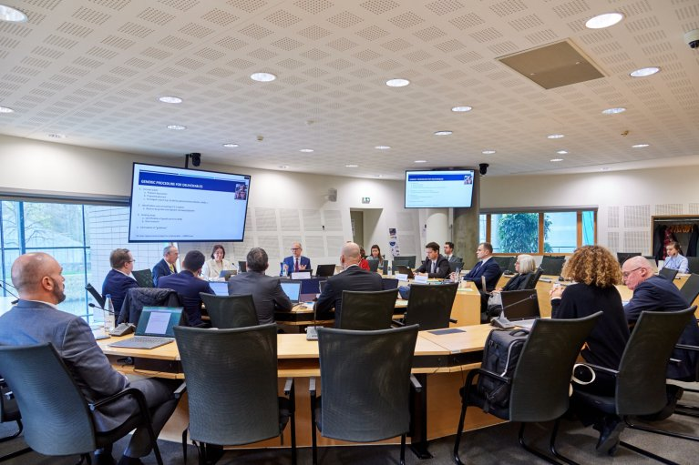

Венс закликав світ послабити “надмірне регулювання" штучного інтелекту
Адміністрація президента США Дональда Трампа хоче створення найпотужніших систем штучного інтелекту, і Вашингтон готовий співпрацювати зі світом у цій галузі. Про це заявив віцепрезидент США Джей Ді Венс, виступаючи 11-го лютого на Глобальному саміті з питань штучного інтелекту в Парижі, Франція.